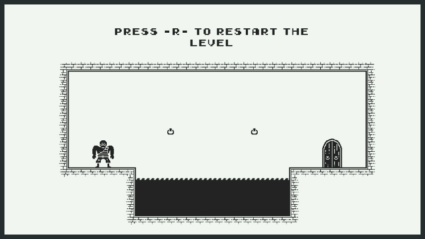

Skip and Hook
...is a short 2D platformer with a twist on the movement mechanic.
In this game, you play as an old retired pirate who started weightlifting but skipped every leg day. So now
he can´t walk and has to swing himself everywhere.
You move by throwing an anchor onto hooks on walls (left mouse button). You can also end this action sooner
(right mouse button). The path you chose is somewhat dangerous, but luckily you can respawn (R). By this
point, there are 15 levels for you to go through.
this game was made for the 72 hour MashUp Game Jam 2021.
PLAY ON ITCH.IO